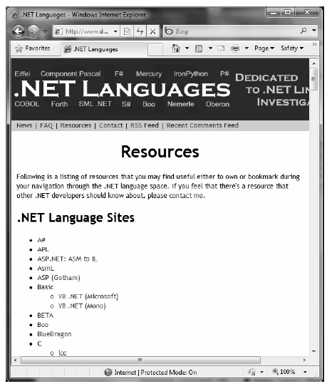

Understand that C# is not the only language that can be used to build .NET applications. When you install the freely downloadable Microsoft .NET 4.0 Framework Software Development Kit (SDK), as well as when you install Visual Studio 2010, you will be given five managed languages out of the box: C#, Visual Basic, C++/CLI, JScript .NET, and F#.
Note F# is a new .NET language based on the ML family of functional languages, especially OCaml. While F# can be used as a purely functional language, it also has support for OOP constructs and the .NET base class libraries. If you are interested in learning more about this managed language, navigate online to the official F# homepage, http://msdn.microsoft.com/fsharp.
In addition to the managed languages provided by Microsoft, there are .NET compilers for Smalltalk, COBOL, and Pascal (to name a few). Although this book focuses almost exclusively on C#, you may be interested in the following web site:
http://www.dotnetlanguages.net
If you click the Resources link at the top of the homepage, you will find a list of.NET programming languages and related links where you are able to download various compilers (see Figure 1-2).
Figure 1-2. DotNetLanguages.net is one of many sites documenting known .NET programming languages While I assume you are primarily interested in building .NET programs using the syntax of C#, I encourage you to visit this site, as you are sure to find many .NET languages worth investigating at your leisure (LISP .NET, anyone?).
As developers first come to understand the language-agnostic nature of .NET, numerous questions arise. The most prevalent of these questions would have to be, If all .NET languages compile down to managed code, why do we need more than one compiler? There are a number of ways to answer this question. First, we programmers are a very particular lot when it comes to our choice of programming language. Some of us prefer languages full of semicolons and curly brackets with as few language keywords as possible. Others enjoy a language that offers more human-readable syntactic tokens (such as Visual Basic). Still others may want to leverage their mainframe skills while moving to the .NET platform (via COBOL .NET).
Now, be honest. If Microsoft were to build a single “official” .NET language derived from the BASIC family of languages, can you really say all programmers would be happy with this choice? Or, if the only “official” .NET language were based on Fortran syntax, imagine all the folks out there who would ignore .NET altogether. Because the .NET runtime couldn’t care less which language was used to build a block of managed code, .NET programmers can stay true to their syntactic preferences and share the compiled code among teammates, departments, and external organizations (regardless of which .NET language others choose to use).
Another excellent byproduct of integrating various .NET languages into a single unified software solution is the simple fact that all programming languages have their own sets of strengths and weaknesses. For example, some programming languages offer excellent intrinsic support for advanced mathematical processing. Others offer superior support for financial calculations, logical calculations, interaction with mainframe computers, and so forth. When you take the strengths of a particular programming language and then incorporate the benefits provided by the .NET platform, everybody wins.
Of course, in reality the chances are quite good that you will spend much of your time building software using your .NET language of choice. However, once you master the syntax of one .NET language, it is very easy to learn another. This is also quite beneficial, especially to the software consultants of the world. If your language of choice happens to be C# but you are placed at a client site that has committed to Visual Basic, you are still able to leverage the functionality of the .NET Framework, and you should be able to understand the overall structure of the code base with minimal fuss and bother. Enough said.